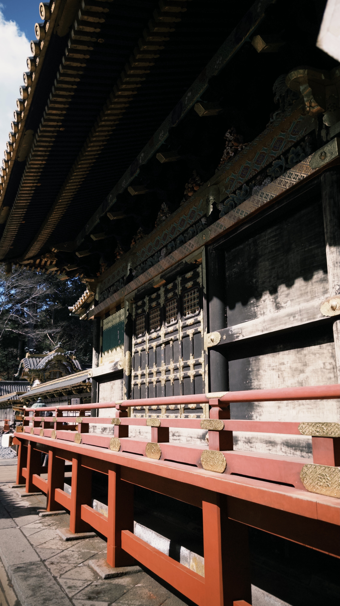
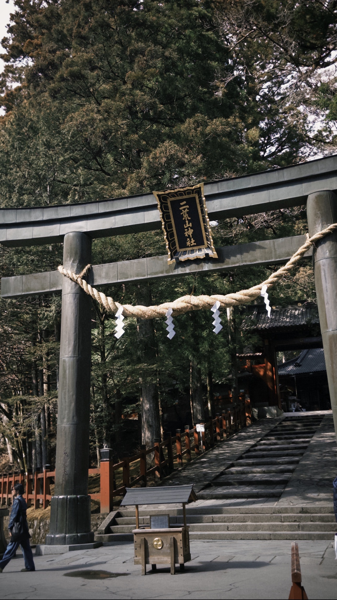
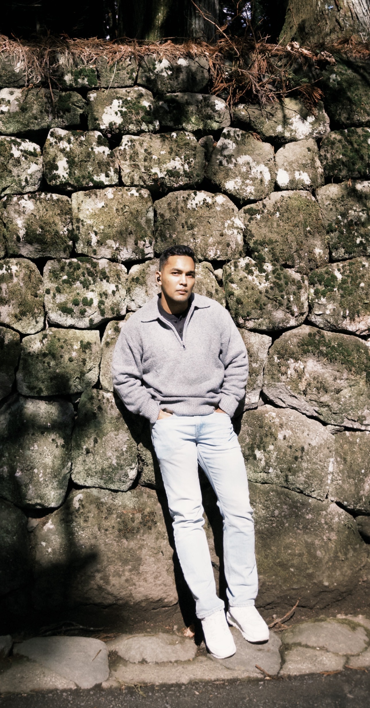
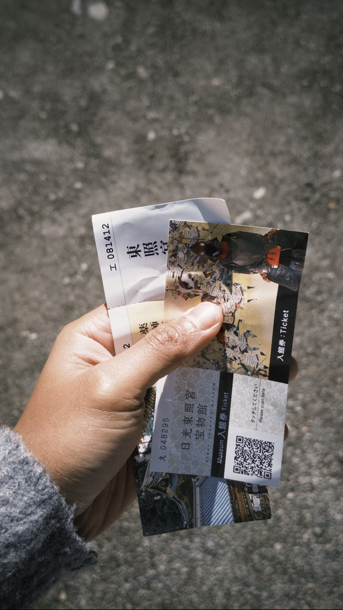
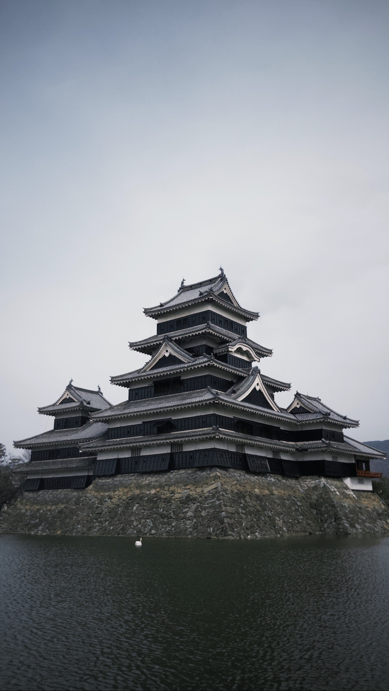
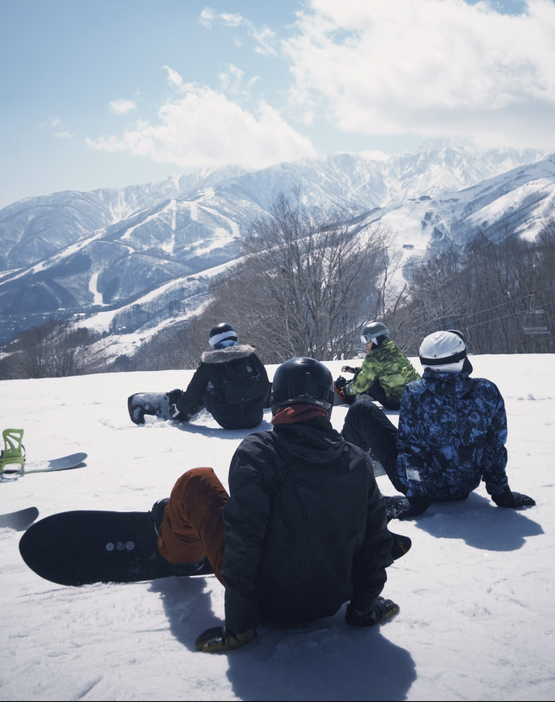
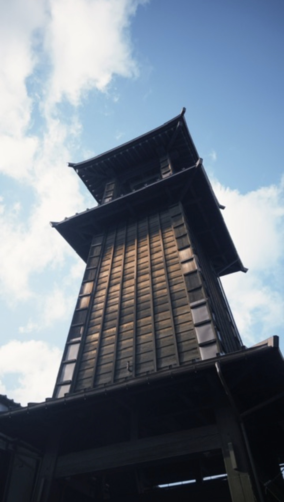
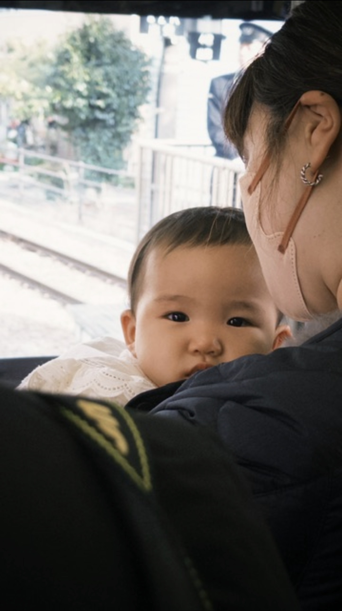
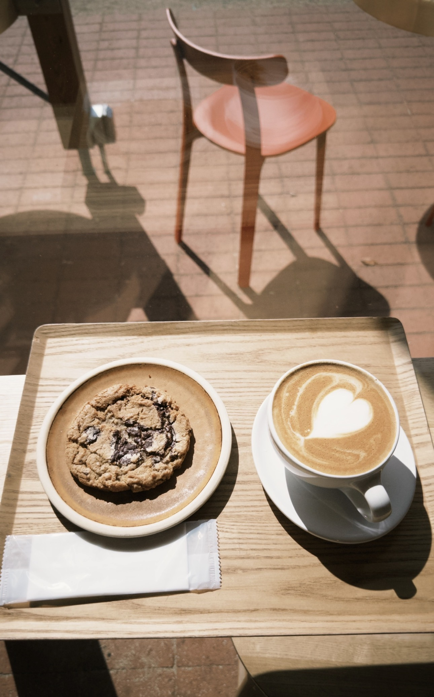
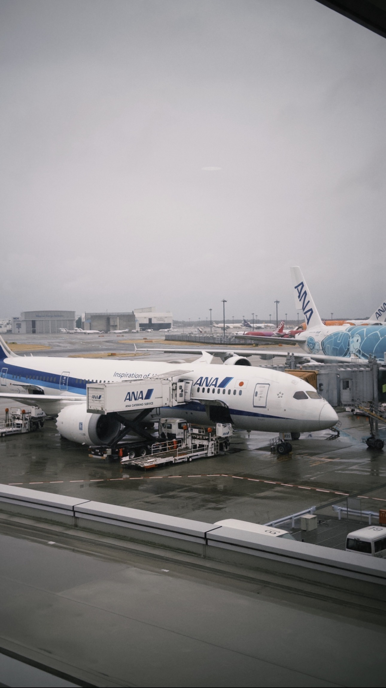

Funny thing. I bought the ticket on my very first day in Japan, during my first trip. Stood there at the airport, jet-lagged, and somehow thought "yeah, let's book the next one." Couldn't help it. And yet, still solo. Probably always will be, and honestly? I'm good with that. 5 cities, just me and my DJI Osmo Nano, and an embarrassing amount of onigiri. Cheapest travel buddy I've ever had.
Arrived at night, so Nikko had to wait until the next morning. Worth the wait? Understatement of the trip. I'm a massive Japanese history nerd, so standing at the actual tomb of Tokugawa Ieyasu hit different. Papa, I made it! The whole place has this calm, cinematic energy, like the kind you'd usually only see in movies. Everyone around me was visibly excited, and I was right there with them trying to act cool but absolutely failing. Photos came out stunning without a single filter. The place does the work for you.
One thing that caught me off guard though. Shops close in the afternoon here. Everything runs on buses and apparently also on a schedule that Indonesia never got the memo about. Took some adjusting, but I survived.



A few hours transit before Nagano, and I wasn't going to just sit at the station. Matsumoto is a small city, walkable enough that I just headed straight and ended up at the castle. As a Japanese history nerd, standing in front of Matsumoto Castle was one of those moments. Sat down at the park in front, said nothing, just looked at it. No words. Pure cinema. Eventually had to drag myself back to catch the next train. And yes, Nagano baby.

One word: UNBELIEVABLE. Two stops here, the monkey hot spring and Hakuba. The walk to the monkey onsen was long, muddy, and I was wearing white shoes. Classic. Watching the monkeys argue with each other in the hot spring was oddly therapeutic. Basically watching my siblings on a family holiday.
Next day, Hakuba. Turned out it was literally the last operating day before the resort closed for the season. Lucky timing or fate, I'll take either. Now here's where I made some genuinely terrible decisions. No proper jacket, no gloves. I saw gloves for sale at 4,000-5,000 yen. Easy decision buddy. I let my hands freeze. No way I'm spending that for a one time use.
Standing at Iwatake with frozen hands and no jacket felt like the longest two hours of my life even though it wasn't that long. Eventually tapped out and came back down. But the view? 100/10. First snow mountain. First time genuinely questioning if this is how it ends. Would absolutely do it again.

Took a full rest day in Tokyo before this one. I am not the type of traveler who needs to be somewhere every single hour. I choose peace. Rest when you need to rest. No itinerary guilt.
Kawagoe came from a TikTok rabbit hole and honestly, best recommendation the algorithm ever gave me. The main street still carries that old Edo-era feel, which is cool, but what really got me was the street food. Every single stall. I had zero willpower. RIP my yen, genuinely. Came on a weekend so it was packed, but the energy was great. The vibe, the layout, the food. All of it. Guaranteed good time.

Who doesn't know Slam Dunk? The second I got off the train I felt it. I'm literally standing in that world. I keep saying this about Japan and I'll keep saying it: I have not found a single spot that didn't match my taste. Not one.
Waited for that iconic train crossing that's all over everyone's feed. Waited a good while. The train passed in approximately 3 seconds. I got the video though, so technically a win. Thank god it was winter, because if it was hot I would've left after five minutes, no question.
Street food near the station after that. No words, 1000/10. Very matcha-heavy which isn't really my thing, so I navigated around it and still ate well. I'd come back to Kamakura, but let's be honest. It'd be for the food, not the train.

A fellow passenger on the Enoden line. Stared at me the whole ride.
From day one in this city I just knew. Best urban city I've been to, full stop, and nothing on this trip changed that. The layout works, the people mind their business in the best way possible, and there's this unspoken rule of "I won't bother you if you don't bother me" that I deeply respect.
Hit Shibuya, Nippori, Asakusa, same areas as my first trip, because I liked them enough to come back. And the highlight this time around? I blocked out an entire day just to sit at Blue Bottle Toyosu Park. Again. Same as part one. Zero regrets. The park is quiet, the coffee is good, and the people around you are either on a date, walking their dog, or sitting alone staring into the distance like they're having a serious conversation with themselves. Relatable content.


That's part two done. Part three? Obviously happening. Different cities on the list, but Tokyo is locked in no matter what. I love this city, man.
← Back to Life